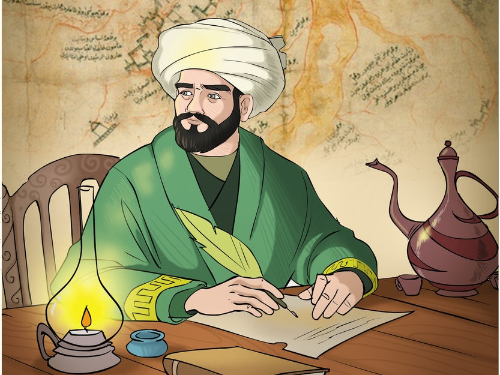
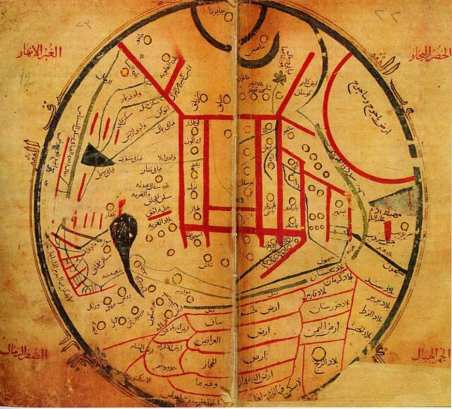

Kayıp Olan Eser Dîvânu Lugâti't-Türk'ün Bulunuş Hikayesi
.jpg)
Divânu Lugâti't-Türk'ün başka nüshaları da oldğu tahmin edilmektedir. Ancak günümüze sadece bir adet nüshası ulaşmıştır (Ercilasun & Akkoyunlu, 2014: xxiii). Günümüzde bu nüsha istanbul Millet Kütüphanesinde bulunmaktadir. Şam’da yaşayan Muhammed bin Ebi Bekir ibni Ebi'l-Feth tarafindan, bu nüsha istinsah edilerek, 1 Ağustos 1266 Pazar günü tamamlanmıştır (Kayadibi, 2008: 2). XIV. yüzyıldan itibaren Divânu Lugâti't-Türk'ün varlığına ulaşmak mümkündür. Ebu Hayyan el Endelusi "Kitâbü'l-idrak li-lisâni'1- Etrak" adlı eserinde, Ibn Muhamme "Tâcü's- sâdât ve 'unvânü's-siyâdât" adlı eserinde, Bedreddin el Ayni "ikdü'l- cümân fi târihi ehli'z zaman" adlı eserinde ve kardeşi Sehâbeddin Ahmed ile birlikte yazdıkları "Târihu's Sihâbi" adlı eserde Divânu Lugâti't-Türk 'ten kaynakça olarak yararlanıldığı bilinmektedir.
Daha önce bahsettiğimiz gibi Kâtip Çelebi de "Kesfü'z Zunun" adlı eserinde Divânu Lugâti't-Türk'ten bahsetmiştir. Eserin daha sonra herhangi bir kaydına rastlanmamıştır (Kaçalin, 1994: 449). 1905 yılına kadar Divânu Lugâti't-Türk Vanioğullarından Ahmet Nazif Paşa’nın elinde muhafaza edilmiş, daha sonra aile üyesinden bir hanım tarafindan kitapçı Burhan Efendi'ye getirilerek onun vasıtasıyla Ali Emiri Efendi'ye satılmıştır (Ersoy, 2018: 80). Ali Emiri Efendi 1857-1924 yıllar arasında yasamış, şair, arastırmacı, Osmanli tarih ve edebiyati hakkında derin bilgi sahibi, yazar ve kitapsever bir aydındır. 14 bini aşan kitaptan oluşan kütüphanesi günümüzdeki Millet Kütüphanesi'ne vakfedilmiştir (Kayadibi, 2008: 3).
Bu eşsiz nüshanın bulunuş hikayesi Kilisli Rifat tarafindan Yeni Sabah gazetesinde bir dizi hâlinde kaleme alınmıştır (Ersoy, 2018: 80). Maliye nazir Nazif Paça, Divânu Lugâti't-Türk'ü akrabası olan bir kadına hediye ederek: "Dara düşersen otuz liradan aşağıya verme! " diye tembihlemiştir. Bir süre sonra paraya ihtiyacı olan kadın, kitabi sahaf Burhan Bey'e getirmiştir. Burhan Bey kitabi Maarif Naziri Emrullah Efendi aracılığı ile ilmiye Encümenine ulastırmıştır. Fakat Encümen eser için on lira fiyat biçince, kitap Burhan Bey'e geri dönmüştür. Ali Emiri Efendi'nin en büyük ilgi alani sahaflari dolaşarak nadide eser toplamaktır ve bir gün sahafları dolaşırken kitaba rast gelmiştir (Kayadibi, 2008:
3).Ali Emiri Efendi kitabi incelediğinde Kesfü'z Zunun'da adı geçen Divânu Lugâti't-Türk olduğunu anlamış, heyecanlanmış ve büyülenmiş. Ancak pazarlık etmek amacıyla heyecanını gizlemiştir. Ali Emiri Efendi'nin yanında 15 lira vardir ve borç isteyecek bir dost göndermesi için içinden dua etmeye başlamıştır. Çok geçmeden arkadaşı Darüfünun edebiyat öğretmeni Faik Resat oradan geçer ve borç vererek kitabın üzerini tamamlamıştır. Ali Emiri Efendi eseri büyük bir heyecanla vakit geçirmeden 30 liraya satın almış, Burhan Bey'in isteği üzerine 3 lirada ona bahşiş bırakmıştır. Kitapçı arkasından gelirde kitab geri ister korkusu ile arkasına bakmadan evin yolunu tutmuştur. Ali Emiri Efendi kitabi aldiktan sonra neşeden kendinden geçmiş, esine dostuna kitabi ballandira ballandira anlatıp durmuştur. Ali Emiri Efendi kitap hakkinda: "Arkadaşlar bu kitap değil, Türkistan ülkesidir. Türkistan değil, bütün cihandır.” demiştir.
